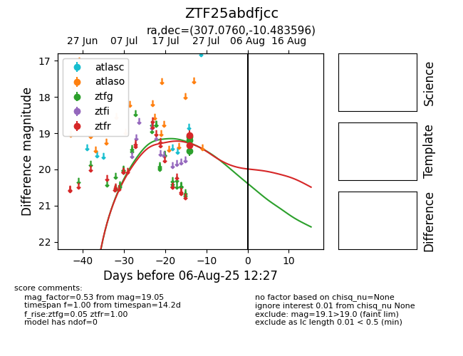

Target ZTF25abdfjcc at 2025-08-06 17:07, see:
FINK: fink-portal.org/ZTF25abdfjcc
Lasair: lasair-ztf.lsst.ac.uk/objects/ZTF25abdfjcc
ALeRCE: alerce.online/object/ZTF25abdfjcc
alt names
ZTF25abdfjcc (ztf,fink)
coordinates:
equatorial (ra, dec) = (307.0760,-10.48360)
galactic (l, b) = (34.3359,-26.22742)
photometry
last ztfg=19.49, ztfr=19.05
3 ztfg, 2 ztfr detections
